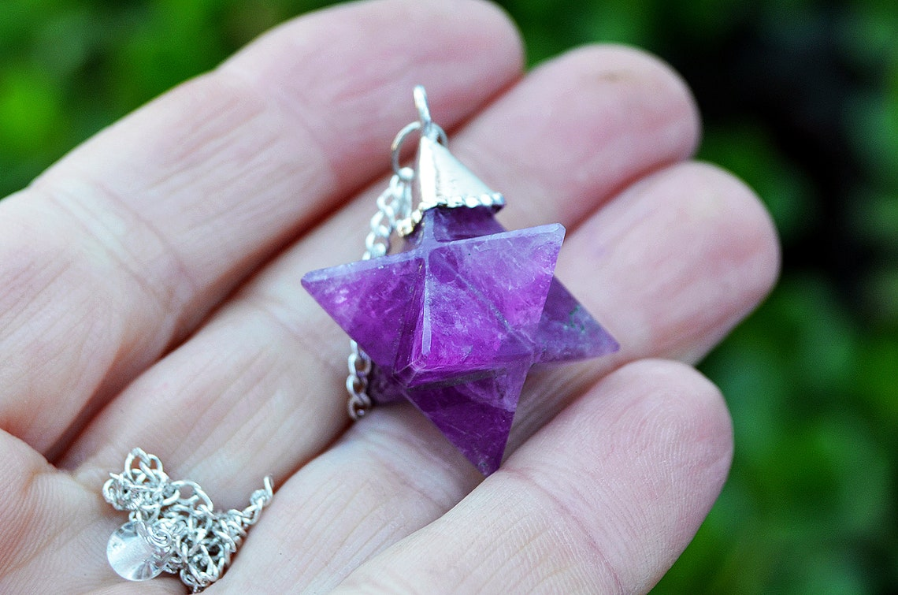

Arriba, una roca amatista geoda.
Los principales yacimientos de amatista se encuentran en los montes Urales, Alemania, Australia, Zambia, Brasil, departamento de Artigas en Uruguay, Estados Unidos, Canadá, India, Sri Lanka, Bolivia, España, Argentina y Túnez.
AMATISTA
La amatista es una variedad púrpura del cuarzo. Se incluye dentro de la clase de los silicatos, el grupo de minerales que forma el 95% de la superficie de nuestro planeta por ser el principal elemento de las arenas, las rocas, y las arcillas.
Las amatistas son uno de los minerales más espectaculares que existen y tanto en el antiguo Egipto como en Mesopotamia ya se utilizaban para fabricar joyas y ornamentos.
-
Clase:
Silicatos
-
Fórmula química:
SiO 2 Fe +3
-
Composición:
Silico, oxígeno y hierro
-
Dureza:
7 en la escala de Mohs
-
Exfoliación:
Concoidea
-
Fractura:
Ninguna
-
Color:
Blanco y violeta en diversas tonalidades
-
Brillo:
Vítreo
-
Raya:
Blanca
-
Sistema cristalino:
Hexagonal o trigonal
El artista renacentista Leonardo da Vinci escribió en sus textos que la amatista tenía el poder de alejar los malos pensamientos y que potenciaba la inteligencia de las personas.
La amatista tiene aplicaciones en la joyería
En la Edad Media, los soldados llevaban pequeños fragmentos de este mineral en el interior de sus armaduras como amuleto para protegerse en las batallas.
¿Sabías que...?
En la Grecia antigua se creía que este mineral era un antídoto contra la borrachera y por eso se bebía el vino en copas hechas de amatista. La leyenda cuenta que Dioniso, el dios del vino, quería casarse con una doncella llamada Amethystos, pero ella no lo amaba. La diosa Artemisa escuchó las suplicas de la joven y la transformó en una roca de cristal blanco para que así pudiese evitar el matrimonio. Arrepentido, Dioniso vertió vino sobre la roca y esta quedó teñida de color púrpura para siempre.
El color del cuarzo depende de las trazas de otros elementos que pueda contener. Por ejemplo, el color violeta de la amatista proviene de los restos de hierro que encontramos en su composición.
Propiedades del Cuarzo rosa
La amatista es una variedad púrpura del cuarzo que se forma en el interior de las geodas. Durante siglos se ha utilizado para fabricar ornamentos y joyas por su fascinante belleza. Si la amatista se expone a altas temperaturas, su color violeta cambia de tonalidad.
Las amatistas acostumbran a encontrarse en el interior de las geodas, un tipo de rocas que se forman cuando el magma del centro de la Tierra se solidifica en el exterior. Una de las características más curiosas de las amatistas es que son muy sensibles al calor y si se exponen a altas temperaturas su color violeta adquiere otras tonalidades.